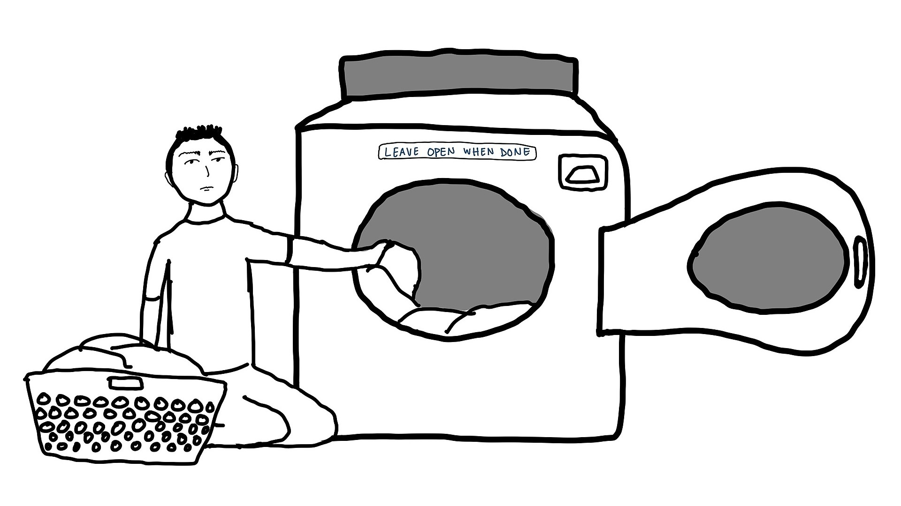
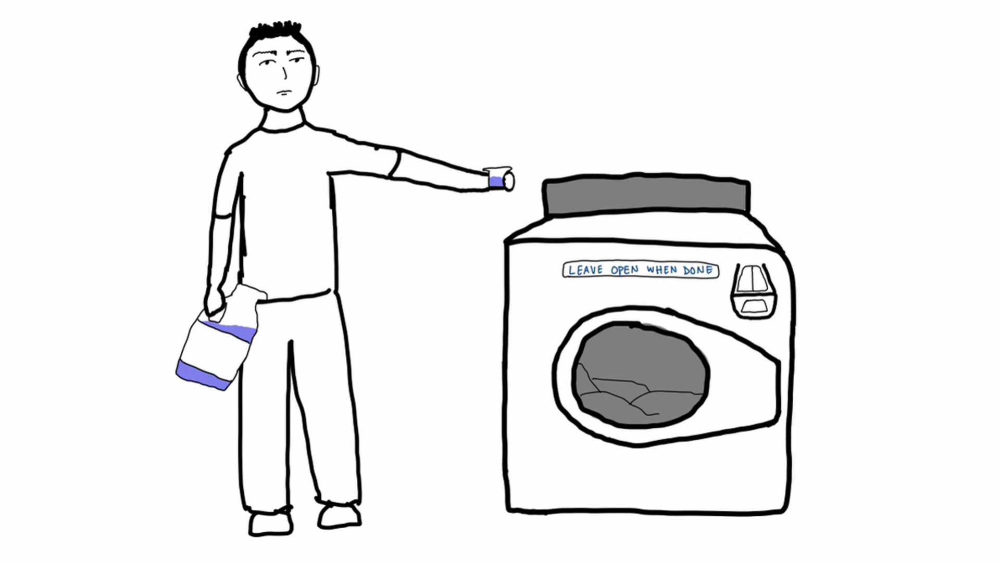
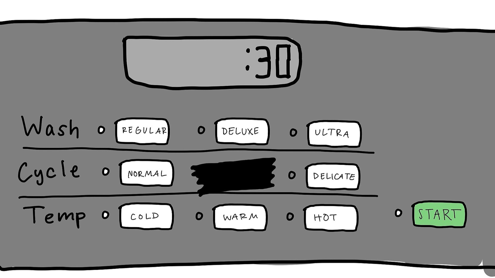
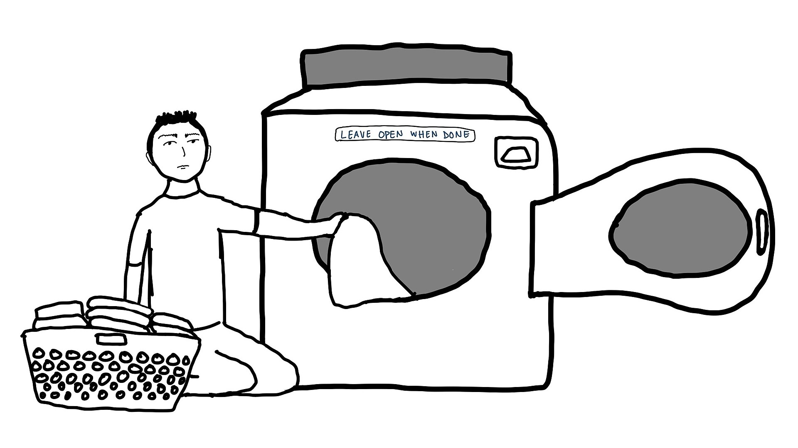
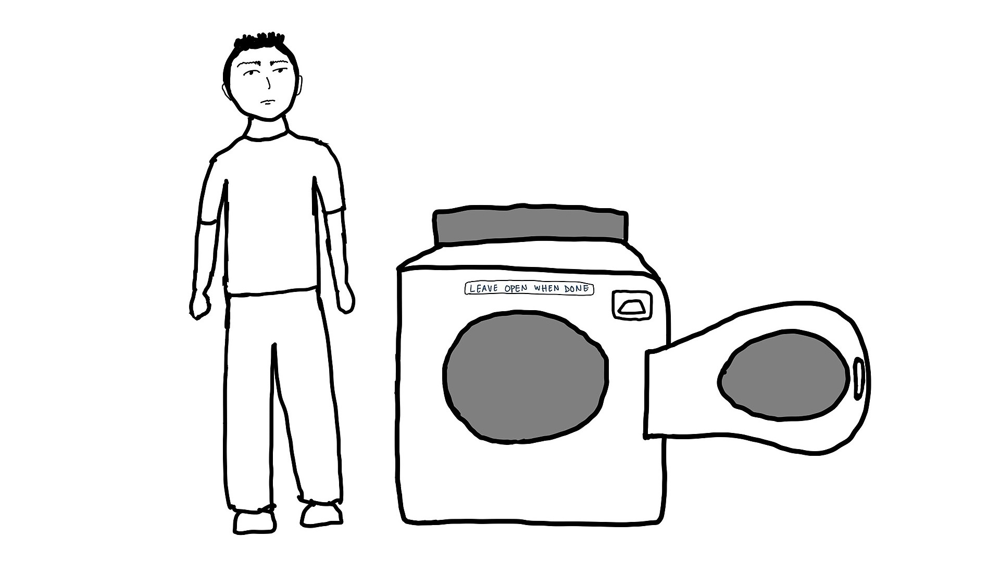
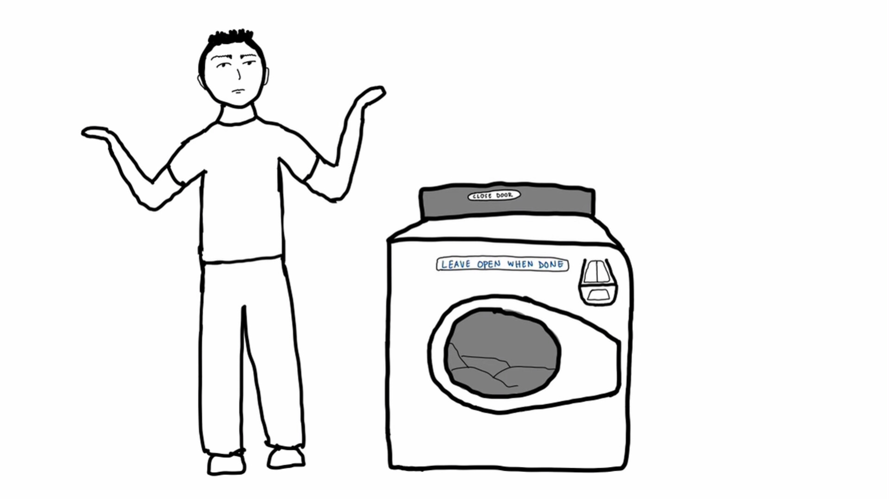

Greg has run out of clean clothes so he knows it's time to do laundry. He goes down to his dorm laundry room and loads his clothes into an empty machine.

He then measures out enough detergent for a large load and pours it into the detergent drawer.

Greg doesn't really know what the different settings mean, so like always he chooses regular wash, normal cycle, and cold water and starts the load. He sees that it will be done in 30 minutes.

30 minutes later, Greg comes back to unload the washer.

He notices the the sign that says to leave the door open so he does so.

As he's on his way out, he notices that the display now reads "Close door" so he is left confused about what to do, ultimately deciding to close the door.